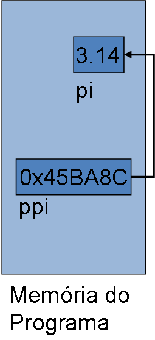
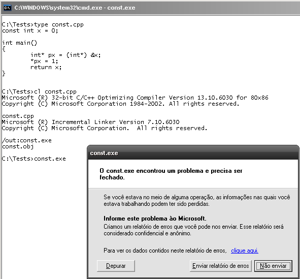
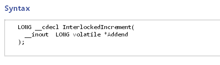

- O Pequeno Nicolau (Laurent Tirard, 2009)
- Const e Volatile
- O Golpista do Ano (Glenn Ficarra, John Requa, 2009)
- Almas à Venda (Sophie Barthes, 2009)
- Plano B
- Príncipe da Pérsia: As Areias do Tempo
- Kick-Ass Quebrando Tudo
- Toy Story 3
- Predadores
- Flor do Deserto
- Toy Story 2
- Ponyo: Uma Amizade que Veio do Mar (Hayao Miyazaki, 2008)
# O Pequeno Nicolau (Laurent Tirard, 2009)
Caloni, 2010-06-02 <cinema> <movies> [up] [copy]O Pequeno Nicolau é aquele típico exemplo de filme fofinho que funciona pela dedicação de sua direção de arte em reconstruir a época com um esmero tocante, por seu roteiro que entende a mente das crianças, e como sua criatividade às vezes (quase sempre) extrapola os limites da vida real de maneira encantadora, por sua direção que não mede esforços para situar o ponto de vista de tudo que acontece através dos olhos do pequeno Nicolau do título, um personagem famoso em livros franceses.
Acompanhamos diversas peripécias dos meninos na escola, que tentam encontrar uma forma de se livrar do futuro irmãozinho de Nicolau que, ele imagina, virá logo. Acompanhar esses eventos episódicos é quase como assistir à novela Carrossel (mas em grande estilo, francês) em formato longa-metragem. Mesmo assim, encanta que o filme também confie em nossa identificação quase apenas com o universo infantil, pois é dali que surgem as melhores gags.
No fundo é um filme que confia quase que cem por cento na identificação do público com uma infância lúdica da escola. Confia tanto que o mais impressionante de todo o filme é a direção de arte completamente voltada para o universo de Nicolau (e seu reduzido tamanho, como diz no título), assim como uma escolha de elenco feita a dedo e que provavelmente tomou mais tempo da produção do que as próprias filmagens.
# Const e Volatile
Caloni, 2010-06-04 <computer> [up] [copy]Padrão C (ISO/IEC 9899:1990)
6.5.3 type-qualifier
const
volatile
Padrão C++ (ISO/IEC 14882:1998)
cv-qualifier
const
volatile
Qualificadores de tipo
Chamamos de qualificador de tipo as palavrinhas mágicas **const** e **volatile**. Na prática elas definem como uma determinada variável será usada e se comportará durante a vida do programa.
Const
Uma variável const não pode ser alterada pelo programa durante sua execução, apenas durante sua inicialização:
const float pi = 3.14; // até onde sabemos, pi não irá mudar neste Universo
No exemplo acima, o valor de pi não pode mais ser alterado. Só que repare que ele foi, em determinado momento, alterado com um valor constante: na sua inicialização. Isso quer dizer que:
* pi é uma variável no programa representada por um local na memória **endereçável **pelo programa
* pi não é um define do pré-processador que irá virar uma constante literal (3.14, por exemplo)
// eu posso endereçar uma constante, // desde que qualifique corretamente meu ponteiro const float* ppi = & pi;
Teoricamente a região da memória que contiver uma variável const pode ser qualificada pelo sistema operacional como somente-leitura, mas isso não é uma obrigação. É obrigação do compilador avisar sobre tentativas de alteração da variável no meio do programa, mas nem sempre é possível enxergar que a memória não é alterável. Dessa forma, resultados imprevisíveis podem ocorrer.
Uso prático
Eu costumo usar variáveis const no lugar de defines. Além de ganhar na tipagem as constantes não precisam ser necessariamente globais, nem acessíveis por outros módulos. Um outro uso muito comum é criar variáveis locais que você sabe que não devem ser alteráveis por ninguém, como o tamanho de matrizes primitivas.
namespace Math
{
const float Pi = 3.14;
}
//...
int func1(int x)
{
float calc = x * Math::Pi;
return calc;
}
//...
int func2(int y)
{
const size_t PathSize = MAX_PATH * 2;
//...
char path[PathSize];
//...
}
Volatile
O significado do volatile teoricamente muda de implementação para implementação, mas na prática é uma forma de definir uma variável que está sendo acessada por outros programas/threads/entidades espíritas que podem alterar o seu valor sem seu programa notar quando.
O exemplo clássico da API Win32 é o InterlockedIncrement, que realiza operações atômicas em valores inteiros. Para fazer isso é necessário usar um recurso interno disponível pelo processador que irá modificar a memória sem intrusão de outras threads/processadores.
Uso prático
Variáveis volatile geralmente interagem de alguma forma com o sistema em que rodam, e são representadas por ponteiros para memória retornada por esse sistema ou documentada como sendo de uso específico.
Const e Volatile
É possível que exista uma variável que não pode ser modificada pelo seu programa, mas é modificada pelo sistema, de forma que ela é uma mutante!
/// endereça o relógio do sistema, atualizado a cada 1/100 milissegundos const volatile int* g_systemClock = (const volatile int*) 0x7689B9D4;

A definição de *g_systemClock é de uma memória que não pode ser alterada; só que ela é, pelo sistema. Então a variável também é volatile. No entanto, independente de ser const ou volatile, o tipo nunca será **alterado**, apenas **qualificado**. São duas coisas diferentes na linguagem.
# O Golpista do Ano (Glenn Ficarra, John Requa, 2009)
Caloni, 2010-06-04 <cinema> <movies> [up] [copy]Um filme com estilo episódico (fade out em vários momentos), narração em off de um protagonista que supostamente está morto (acho que já pensaram nisso antes...) e invencionices demasiadas com a câmera, muitas vezes na mão. Apesar de ter tudo para dar errado, O Golpista do Ano apresenta Jim Carrey, Ewan McGregor e até Rodrigo Santoro em personagens que acompanham as personas dos atores, mas desafiam a realidade dos eventos (sim, o filme é baseado em alguns fatos em torno da figura de Phillip Morris).
O fato é que com atuações convincentes e uma trama que nos leva ao ápice da malandragem, O Golpista do Ano se saiu muito melhor que o tão falado Trapaça. Ewan McGregor, por exemplo, domina a história e o personagem desde o início, estabelecendo de uma vez por todas a relação entre Phillips e Steven, vital para o filme (como demonstra o título original). Realizando cenas engraçadas e emocionantes ao mesmo tempo, o roteiro e direção da dupla John Requa e Glenn Ficarra consegue oscilar de maneira mais ou menos tranquila entre os dois lados da mesma moeda.
No entanto, embora use de uma direção de arte significativa em seus mínimos detalhes (exemplo: quando eles se separam definitivamente cada um em uma prisão, as cores de seus uniformes são diferentes), a caracterização excessiva de Jim Carrey -- principalmente em seu leito de morte -- acaba mais assustando que se ornando com o conjunto da obra. Afinal de contas, deveria ser uma comédia, certo?
Talvez eu esteja errado. A vida real desses três sujeitos é uma comédia, mas definitivamente eles possuíam poucos momentos para rir de si mesmos.
# Almas à Venda (Sophie Barthes, 2009)
Caloni, 2010-06-09 <cinema> <movies> [up] [copy]Esse filme escrito e dirigido pela estreante Sophie Barthes tenta usar o conceito de alma mais ou menos como um órgão transplantado, mas muito mais flexível, já que é possível usar a alma de outras pessoas para potencializar áreas na vida em que se é um zero à esquerda. Aí é que entra Paul Giamatti que interpreta... Paul Giamatti! Ele está com problemas com uma nova peça e resolve trocar de alma por uma que seja compatível com o personagem que tenta interpretar.
Sendo filmado como um thriller cômico, o filme ganha ritmo apenas ao tentar explicar como funciona a extração e o transplante de almas, e nem isso consegue fazer com propriedade. Não deixa de ser contraditório saber que, ainda que não se saiba exatamente como o mecanismo de almas funciona, já existem comparações entre elas (tanto que a suposta alma de Al Pacino é extremamente valiosa). De qualquer forma isso pode ser visto como uma crítica a respeito de como damos valor a coisas que simplesmente não sabemos o valor (e o fato do filme nunca se preocupar em explicar o que é alma). Há uma referência óbvia também à privacidade que temos hoje em dia. No anúncio da extração de almas por telefone fala-se sobre a privacidade total, mas quando o ator vai à consulta fica em uma sala de espera com um monte de pessoas e é chamado pelo nome.
Outro aspecto interessante é que as almas possuem cores e formas diferentes, e é óbvia a piada das celebridades terem almas "maiores" fisicamente, enquanto a do protagonista é minúscula e possui um formato pouco lisonjeador. A forma como a alma é tratada implica em como tratamos coisas de hoje em dia de maneira completamente banal. Se antes, no senso geral, a alma é algo inviolável, sagrado, na conversa com o Dr. fica bem óbvio que passa a ser mais um simples órgão, ou o que o valha. (O ator exclama "até que ponto chegamos", no que o Dr. responde "é a tecnologia, seu avanço", como se esse fosse o único empecilho para a agora possível extração de almas).
Ao ver a técnica de extrair almas é inevitável a comparação com o apagar de memória em Brilho Eterno de uma Mente sem Lembranças, e é notável como pode-se comparar ambos os filmes, principalmente na superioridade do roteiro de Brilho Eterno, que não se deixa intimidar pela ideia original e poderosa. Infelizmente, Almas à Venda sucumbe à sua própria ideia de ser original e em seu segundo e terceiro atos parte para um thriller clichê. É triste ver um tema tão bom não ser expandido em suas potencialidades, se bastando em uma historinha besta que poderia muito bem estar em outro contexto (tráfico de qualquer outro órgão, por exemplo).
# Plano B
Caloni, 2010-06-11 <cinema> <movies> [up] [copy]O produtor e diretor de TV Alan Poul resolve fazer este seu único longa para o Cinema que se transforma em uma mesmice sem tamanho. E olha que em questão de comédias românticas, mesmice já é a regra.
Partindo de uma introdução artificial, ou sintética, mas que é efetiva porque já explica tudo bem rápido, há um romance no ar entre Stan (Alex O' Loughlin) e Zoe (Jennifer Lopez), que acabou de saber que terá gêmeos de sua inseminação artificial, ou seja, o começo de sua vida de mãe solteira começa a sumir logo no primeiro dia. O início é com a voz da protagonista em off, que é na verdade o pensamento dela, de forma que o final não combina com o começo, então já não estamos falando de um roteiro com alguma rima poética ou mais elaborada.
Por outro lado, o grande "trunfo" no filme é a própria filmagem. Explorando ao máximo a comédia de situação em um filme com um detalhe inusitado (os recém-namorados já devem planejar uma gravidez) e com atores não muito inspirados (são usados ângulos e câmeras que maximizem as expressões deles, e demonstrem muito bem o que estão sentindo no momento). No início temos a câmera descendo de uma chuva preparada especialmente para o dia em que a protagonista "é inseminada", e por mais triste que pareça a situação, a felicidade que ela sente impede que ela veja um palmo adiante do que acabou de fazer.
Como toda comédia romântica, há muitas tentativas de fazer humor engraçadinho, seja por situações ou por comédia física, mesmo (desmaios, e surpresa com ultrassom). O fato é que a atriz principal não inspira muito comédia, e seu personagem não tem o feitio, então o cachorrinho na cadeira de rodas é um alívio cômico que funciona para dar cadência e serenidade em algumas situações. Seja como for, já tentamos simpatizar com a personagem pois a história dela já nos força assim, da mesma forma com ele.
O filme ganha situações e expressões inusitadas (e um ritmo mais movimentado) a partir da cena em que ela chega na fazenda e o vê sem camisa, até a cena dos orgasmos múltiplos no "celeiro" de queijos, passando por algumas boas partes (espelho tentando contar sobre a gravidez).
No entanto, esse filme é cozido em banho-maria, sendo que me lembro apenas de dois momentos que ele finalmente parece se sair melhor do que é:
- Stan com o cara do parque, que com pouquíssimas palavras e muitos movimentos demonstra o que é ter três filho.
- A cena em que paulatinamente vamos percebendo que ela não faz parte do grupo das mães solteiras.
Tirando isso, Plano B se sai melhor como um entretenimento no meio de uma tarde chuvosa sem ter mesmo muito o que fazer.
# Príncipe da Pérsia: As Areias do Tempo
Caloni, 2010-06-14 <cinema> <movies> [up] [copy]Inspirado pelo post recente do Daniel Quadros, um programador como eu, mas que gosta de se aventurar em outras áreas (como eu), resolvi publicar minhas impressões sobre esse filme de 2010, que assisti no cinema com o meu antigo caderno de anotações (hoje aposentado até segunda ordem). Minha ideia era apenas praticar minha sensibilidade sobre a sétima arte, mas aos poucos estou organizando os textos da época.
Ainda que Jordan Mechner, criador do jogo, estivesse até certo ponto envolvido com o roteiro cinematográfico, é preciso inocentá-lo do formato bobo e previsível da história assinada por ninguém menos que três roteiristas, dois deles envolvidos em pequenos projetos da Disney, como Aprendiz de Feiticeiro e produções para TV. A despreocupação dos produtores em escolher seus roteiristas, aliás, é inversamente proporcional aos seus objetivos, que com esse subtítulo sugerem que, assim como ocorreu com Piratas do Caribe e As Crônicas de Nárnia, há a possibilidade de continuações.
De qualquer forma, esse filme tem começo, meio e fim. Ambientado na Pérsia antiga, a fuga do príncipe Dastan (Jake Gyllenhaal) do seu reino e, coincidentemente, da princesa Tamina (Gemma Arterton, , sempre uma princesa) desenvolvem a velha fórmula de aventuras destemidas e milimetricamente calculadas, algo inerente dos jogos de vídeogame, e que aqui não consegue se soltar. Em todas as cenas de ação existe o pano de fundo das fases mais difíceis e habilidades maiores requeridas.
O par romântico que se forma, sempre um par romântico, possui tanta química quanto Jack Sparrow e Penélope Cruz em Piratas do Caribe 4: o velho clichê "se odeiam, mas se amam". Desde o início não há motivos para a ajuda vinda da princesa, que precisa também escapar o mais rápido possível.
Se muito o que oferecer em seus papéis, o alívio cômico fica por conta de um divertido Alfred Molina como um comerciante ganancioso. Ben Kingsley, por sua vez, se considerarmos sua participação no Ditador, parece estar entrando no velho esquema Hollywoodiano de "pagar o aluguel", se oferecendo em papéis menores de filmes de comédia/aventura.
Não que a experiência como um todo seja um desastre, mas fica muito aquém de suas possibilidades, já vistas no jogo homônimo. Há algumas tentativas de juntar as pontas, por exemplo, na cena em que vemos o Dastan treinando sua pirueta na parede (e falhando, lógico) e em uma cena de fuga real ele consegue efetuar a tal acrobacia e até acerta três capangas. Porém, mesmo dentro desses momentos inspirados é muito difícil tirar o jogo que originou o filme da cabeça, porque os ângulos e os movimentos do protagonista levam a crer que tudo aquilo é fantasioso, e o fato dos personagens tomarem decisões delicadas com tanta facilidade evidencia a falta de tensão. Mesmo que isso fizesse algum sentido no estilo de vida do príncipe como é visto em sua infância, o mesmo não valeria para a princesa Tamina, que assume o lado sério da relação, embora ela mesma não se leve tão a sério.
Com cenas finais que mais uma vez evidenciam o caráter permanente do jogo na mente dos idealizadores, não deixa de ser um espetáculo visual a cena na areia, que consegue encaixar de maneira satisfatória a ideia de viagem no tempo. O problema reside na superficialidade que este artifício exerce na narrativa como um todo, deixando-a mais fraca do que já é, restando apenas a temporária diversão dos seus efeitos, que são esquecíveis assim que saímos da sala de projeção.
# Kick-Ass Quebrando Tudo
Caloni, 2010-06-18 <cinema> <movies> [up] [copy]Kick-Ass é uma experiência bem-sucedida que reúne super-heróis da vida real, ação, comédia, drama e Hit-Girl, estrelando Chloë Moretz e a tornando uma das atrizes-mirins mais bem-vistas pelo público jovem, com treze anos e aparentando ainda menos.
A questão da justiça feita pelas próprias mãos e a sensação de impunidade pelo "herói" do filme, Aaron (Aaron Taylor-Johnson), é só o início para uma sequência incrível de ação imaginativa e bem-conduzida pelo diretor Matthew Vaughn. Vaughn só dirigiu depois disso X-Men: Primeira Classe e Kingsman: Serviço Secreto, filmes que possuem energia de sobra e comprovam que, se quer filmes de ação, este é um bom nome de diretor para procurar.
# Toy Story 3
Caloni, 2010-06-18 <cinema> <movies> [up] [copy]Toy Story 3, terceiro filme da "saga" dos brinquedos, já entra no clima de nostalgia, pois no fundo é uma despedida anunciada desde sua primeira sequência, que lembra ou se refere a De Volta Para o Futuro 3. Mais uma vez leva a questão do destino de brinquedos usados, mas agora a ação se desenrola em uma espécie de asilo para brinquedos. Esse é conhecido como o mais adorado por todos, especialmente os adultos, que cresceram com a série de filmes. A Pixar tem grande apreço por Toy Story, pois foi o primeiro grande sucesso e grande feito computacional para a época. Gosto dos três filmes de maneira quase que uniforme, pois cada um deles traz algo de novo ao universo sem querer repetir o feito dos anteriores, mas os respeitando como um legado merecedor. Nesse sentido, a referência aos filmes de viagem no tempo de Robert Zemeckis me parece mais que adequado.
# Predadores
Caloni, 2010-06-23 <cinema> <movies> [up] [copy]Último filme de uma longa série que envolve predadores e alienígenas, Predadores cria um ambiente hostil para humanos e uma trama suficientemente coesa para que tenhamos cenas de ação e tensão durante essa mini experiência dentro desse universo onde humanos são sempre caças, e os predadores, seus caçadores. Possui uma participação especial de Laurence Fishburne, além de uma Alice Braga eficiente como par violento de Adrien Brody. Por fim, um filme esquecível depois que colocamos o pé para fora da sala de projeção. Duvido que seja relembrado daqui uns anos.
# Flor do Deserto
Caloni, 2010-06-25 <cinema> <movies> [up] [copy]Um filme delicado sobre uma situação horrível para mulheres, ou melhor dizendo, meninas, na Somália. Lá elas são mutiladas em prol da tradição, da religião ou por causa de qualquer outro motivo idiota como esse. A história de uma top model vinda de lá, refugiada na Europa, é o palco certeiro para a denúncia de uma violação séria dos direitos humanos e da criança. Nem sempre conseguindo exprimir seu tema da maneira mais coesa possível, o longa valeria a pena mesmo que fosse pela sua única mensagem: todo ser humano tem direito à sua própria felicidade.
# Toy Story 2
Caloni, 2010-06-25 <cinema> <movies> [up] [copy]Dessa vez o drama entra no universo dos brinquedos de coleção, aqueles que nunca saem da caixa e são peça de negociação, além de uma visita inesperada e divertida por uma loja de brinquedos fechada. Contando com uma trilha de ação envolvente por se unir de forma praticamente orgânica com as tomadas em que vemos os brinquedos atravessando uma rua cheia de carros, nossa atenção é roubada na primeira metade do filme com uma fluidez que se compara ao primeiro filme inteiro. No entanto, os diálogos finais tornam a segunda metade uma espécie de anticlímax da primeira, não tanto por ter se perdido no meio do caminho, mas pela comparação com a animada primeira parte.
Com piadas que tentam fazer alguma homenagem a grandes ícones do cinema (como 2001, Jurassic Park e até mesmo a frase mais famosa da série Star Wars), vemos um roteiro um pouco mais maduro, que tenta enfrentar questões que serão abordadas de maneira ainda mais madura no fechamento da trilogia, como a questão inicial se o importante é satisfazer a infância de uma criança e ser seu melhor amigo até que inevitavelmente ela deixe de brincar e o jogue no canto, ou a tentadora possibilidade de existir para sempre em uma redoma de museu, observada por crianças do mundo inteiro, eternizado.
De forma inteligente, o filme aborda isso mostrando a Woody que ele era parte de algo maior, uma coleção de brinquedos com temas variados que dariam inveja a George Lucas, com ioiôs, desenho animado com bonecos animados, solta-bolhas, e tantos outros souvenires da mania que era o protagonista.
# Ponyo: Uma Amizade que Veio do Mar (Hayao Miyazaki, 2008)
Caloni, 2010-06-30 <cinema> <movies> [up] [copy]Até uma animação infantil e ingênua como Ponyo, de Hayao Miyazaki, consegue nos fazer pensar em vários temas ao mesmo tempo. Se em um primeiro plano é uma aventura ecológica, onde o desrespeito do homem pelo meio ambiente é colocado em xeque quando Ponyo, um pequeno peixe filho de um pai controlador e sua mãe-natureza, decide se tornar humano e acidentalmente inicia um novo ciclo de crescimento marítimo que pode acabar com a predominância dos homens, seja nos mares ou na Terra. Já em um segundo plano é um filme sobre aceitarmos o diferente. O respeito aqui faz rima com amor incondicional, onde pode-se até especular que esse amor ao diferente pode vir de qualquer lugar, até de minorias como homossexuais.
Independente de qual interpretação que damos, o trabalho de animação se torna primoroso pela obsessão detalhista dos estúdios Ghibli em retratar as forças da natureza de uma maneira humanizada, mas ao mesmo tempo, sobrenatural. As ondas formam desenhos imensos, as montanhas das ilhas da região onde se passa o filme abrem curvas sob o céu. A trilha sonora, inspirada na grandiosidade do próprio tema, emociona a cada novo acorde, acompanhando a aventura de perto (e muitas vezes a ultrapassando).
Não há nada repreensível em Ponyo senão talvez um pouco de falta de cuidado ao desenvolver os personagens secundários e como eles interagem com Ponyo. Se em A Viagem de Chihiro e O Castelo Animado o sobrenatural está bem situado entre os adultos, aqui há uma definição tão simplista que banaliza um pouco todo esse encantamento com a história do peixe que vira criança. Da mesma forma, o conflito final parece ter sido criado apenas como uma mera formalidade que tenta estender uma narrativa simples com desfecho previsível. Não fosse isso, teríamos mais um trabalho do diretor tão emocionante quanto complexo.
[2010-05] [2010-07]